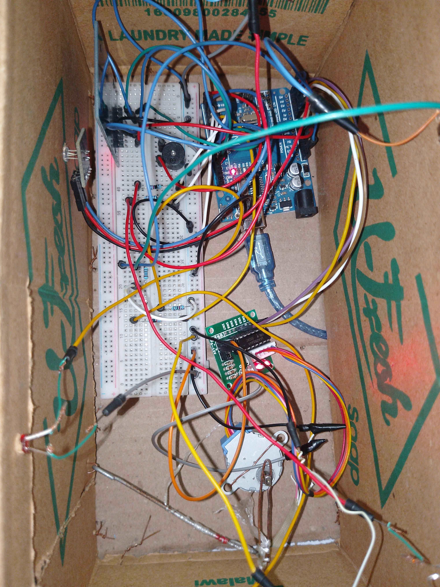
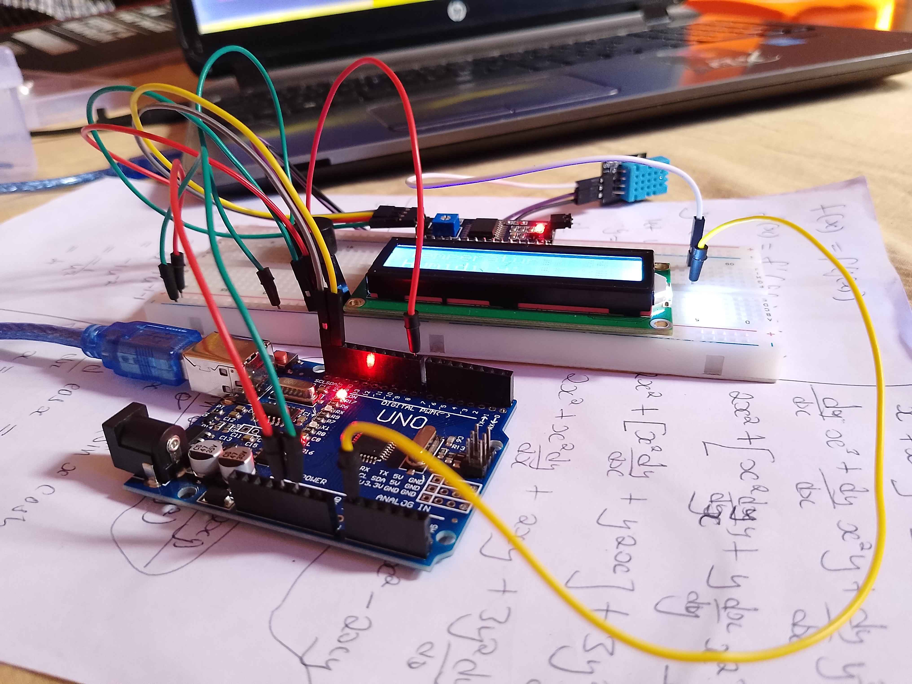
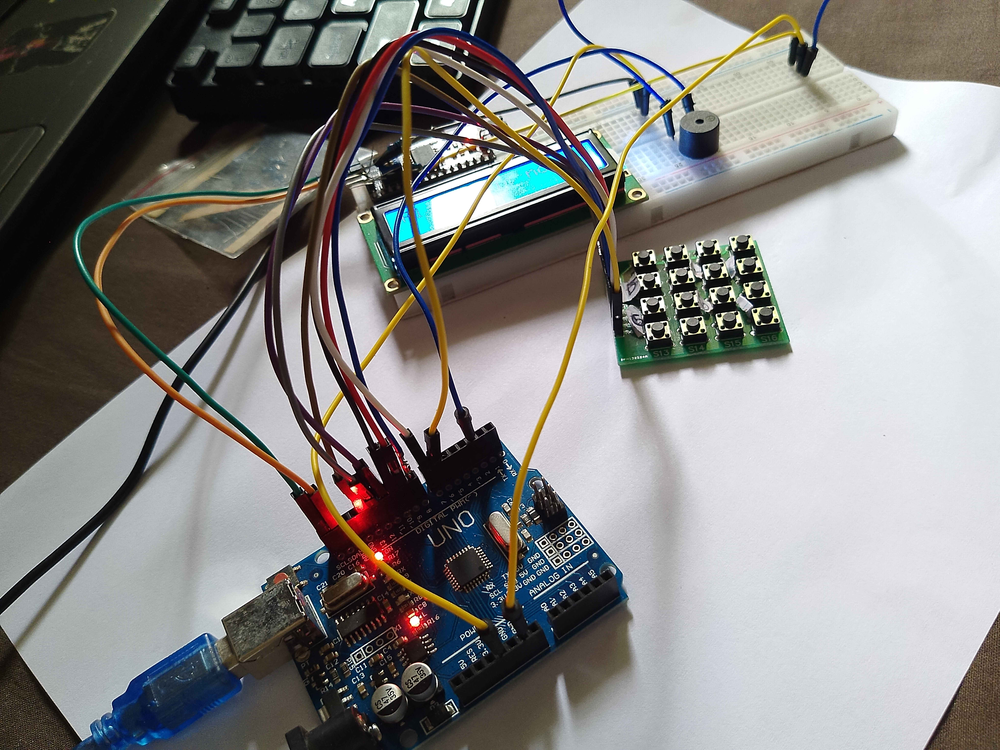
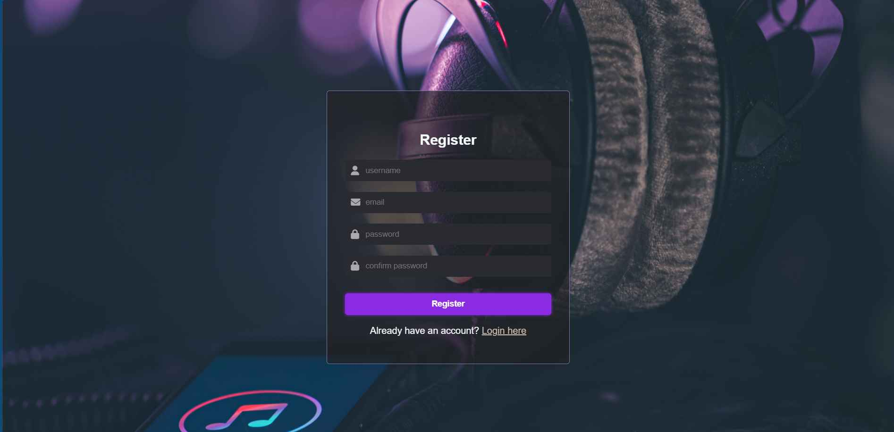

I'm an Energy Engineering student specializing in{" "}
Sustainable Energy Engineering
, focused on building practical solutions for a cleaner and more
efficient energy future. My work combines technical knowledge with
creativity — from designing energy systems to developing
softwares tools that bring data and design together.
Alongside my studies, I'm a self taught programmer experienced in{" "}
web development (HTML, CSS, JavaScript, Node.js),
database (MySQL, InfluxDB) and embedded systems{" "}
using Arduino.I enjoy developing projects that bridge gap
between hardware and software , such as sensor-based automation
systems and smart energy application.
I'm also exploring areas like{" "}
data visulization and IoT intergration, aiming to apply
technology to real-world sustainability challenges. My long-term
goal is to contribute of{" "}
renewable energy innovation and sustanable infrastructure{" "}
in Africa.
Project

SMART HOME
A smart home system using RFID for automatic door access and a
photoresistor to switch on security at night and off during the
day.

Environmental Monitoring System
Uses a DHT sensor to display real-time temperature and humidityon
an LCD and triggers a buzzer when the temperature goes above
37°C.

2-Octave Keypad synth
A 4x4 keypad lets you play two full octaves of musical notes
through a buzzer, with the Arduino gerating accurate frequncies
for each key.

Music Streaming Web App
A web application that allows users to sign up, log in, and browse
songs, artists, and albums. The app also tracks recently played
songs for each user, providing a personalized listening
experience.
Smart Home System
This projet is comprehesive home automaation system designed to
improve security convenience, and energy efficincy. It uses{" "}
RFID{" "}
technology to automatically unlock and open the door when
authorized tag is detected, eliminating the needs for key and
providing controlled access for residents.
The system also intergartes a photoresistor to monitor ambient
light levels to automatically switch on lights during night time
and off during the day, reducing energy consumption and adding
convenience.
Bulit on n Arduino platform, the project demostrates hands-on
experince in arduino programing, sensor interfancing, and embedded
system design. It combines hardware and software to create
seamless user experience, showcasing how simple componets like
RFID readers, buzzers, and light sensors can work together to
automate everyday tasks. This project highlights my ability
ability to design, implement, and optimize smart systems that have
practical, real-world application in residential environments.
Environmental Monitoring system
This Arduino-based environmental monitoring system provides
contnous real-time monitoring oof temperature and humidity, miking
it highly relevant for helthcare envirnments such as clinics,
hospitals, and laboratories. It uses DHT11 sensor to collect
envrironmental data and sisplay it on an I2C-connected LCD screen,
allowing staff to monitor conditio easily. A buzzer alert
activates whentemperature exceeds 37°C, simulating any
corrective action that might be taken—such as adjusting air
conditioning, alerting personnel, or activating safety protocals,
to maintain safe and comfortable conditions for patients and staff
.
By keeping track of temperature and humidity, this system helps
prevent heat-related illnesses, support infection control, and
ensure proper storage of tmperature-sensitive medications and
equipmen. It demstrate proficiency in sensor intergarion,
microcontroller programing, and real-time data monitoring,
highlighting how embedded systems can provide practical,
actionable soluions in the health sector.
2-Octave Keypad Synth
The 2-Octave Keypad Synth is an interactive Arduino-based project
that tranforms a 4x4 keypad into a functional musical instrument
capable of playing two full octaves of notes. Each key is mapped
to a specific musical note, and the Arduino generates precise
frequency through buzzer, enabling users to play melodies. The
project emphasizes user interaction design, as the keypad layout
and feedback machanisms allow intiutive use.
By combining electronics, programming and creativity, this project
bridges the gap betwwen technical engineering and musical
experimentatio, showcasing an ability todevelop hands-on projects
that are both educational and entertaining.
Environmental Monitoring system
This project is an in-progress music streaming web application
built with Node.js, Express.js, and MySQL, focused on delivering a
smooth and functional audio experience. The platform currently
supports user account creation and login, allowing authenticated
users to access personalized features. Once logged in, users can
browse songs, explore artist profiles, view album pages, and track
their recently played history, which updates automatically as they
listen.
The backend is structured using modular routes and relational
database models for users, tracks, artists, and albums, ensuring
clean data flow and easy scalability as more features are added.
Static assets such as MP3 files and cover images are served
efficiently using a custom static file pipeline. Although playlist
creation is not yet implemented, the foundation is already
prepared for future expansion.
This project demonstrates practical skills in backend development,
database design, secure authentication, and media handling, while
also showcasing strong architectural planning for future growth
into a full streaming platform.